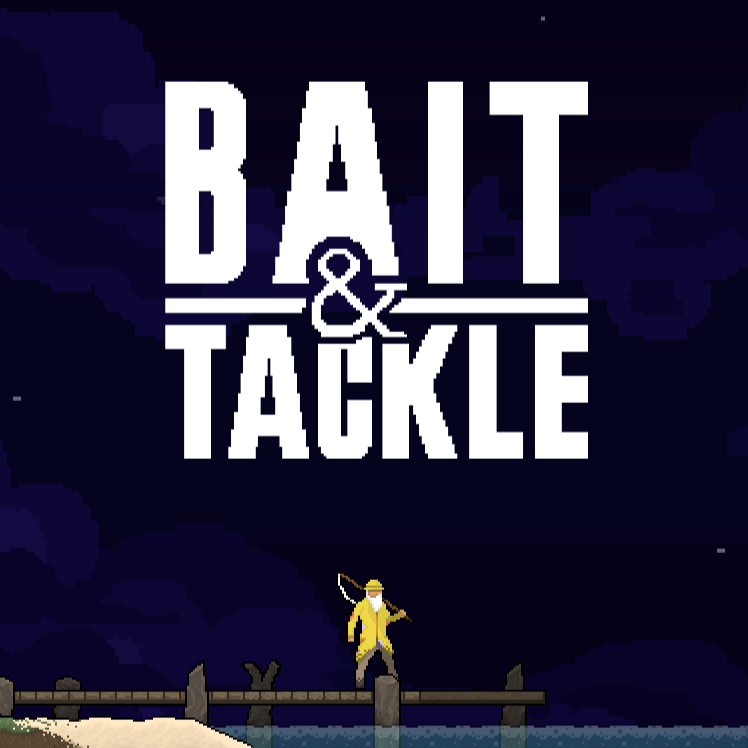
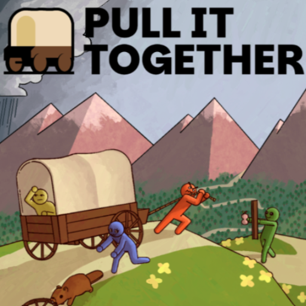
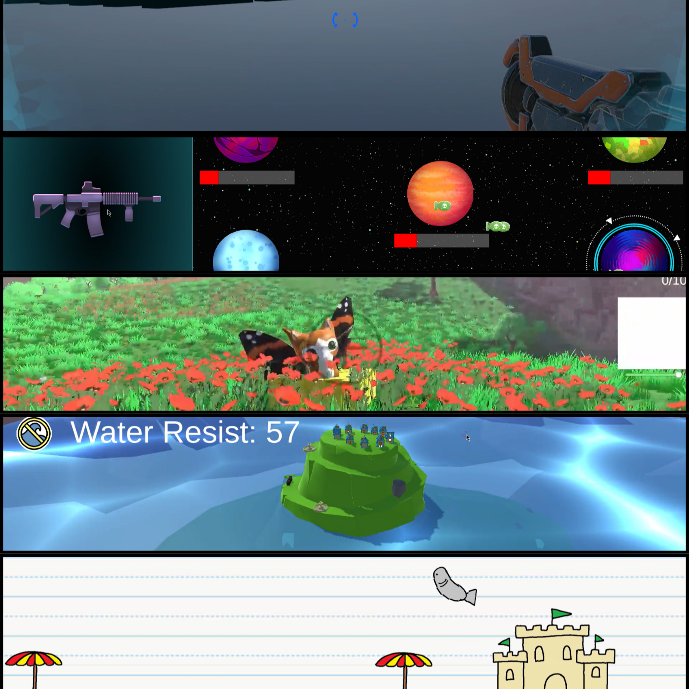
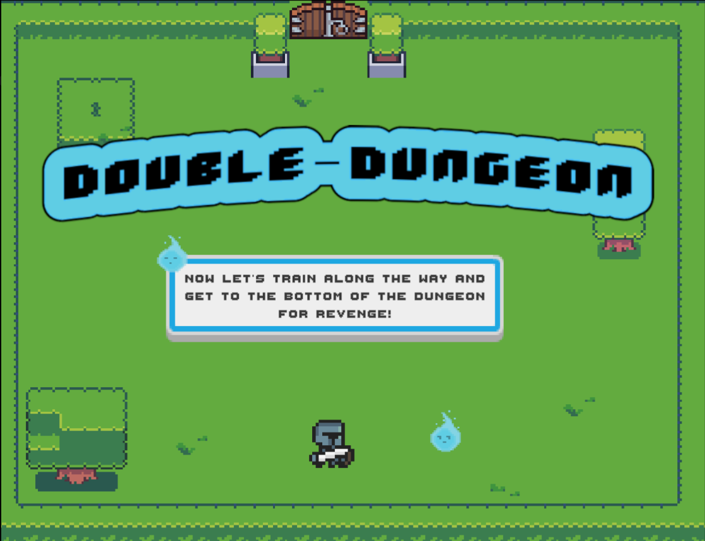

Bait & Tackle
A 2D, fishing-themed, boss rush made using Godot. Use your fishing rod as a regular rod, a grappling hook, and a weapon to take down fearsome monsters.
Game Designer & Developer
Graduate Student from Rochester Institute of Technology
MS in Game Design & Development / BS in Game Design & Development and English
These are games that I have worked on that are currently available for the public to play & download (or will be soon).

A 2D, fishing-themed, boss rush made using Godot. Use your fishing rod as a regular rod, a grappling hook, and a weapon to take down fearsome monsters.

A casual, cooperative multiplayer game where you and up to three friends haul your wagon and fumble through the wilderness to escape the incoming superstorm.
As part of RIT's VIP Program, echoes, I served as Game Director for two of the game projects: Hush, and Reverb.
Unreleased projects that were intended to grow my skills & explore different aspects of design & development. Many of these were academic and personal projects.

A collection of small games built by randomized groups over the course of one semester..

An academic project created with the restrictions of requiring two players share a keyboard, and that each player must have unique controls & abilities.
A collection of three analog games, each of which I served as a gameplay designer on: Biome, Commander(s), and Fat Bass
Multiple small Minecrafts designed & made to explore different languages and design philosophies.
Built as an early academic project, play as D.B. Gooper in this infinite faller as you collect money and dodge falling obstacles.